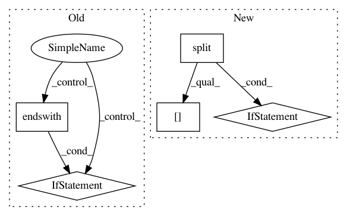

3d03ae2086b232cb6803507ae4defd997c256ec9,tensorflow/python/distribute/multi_process_lib.py,,_set_spawn_exe_path,#,90
Before Change
// and the binary is
// /.../org_tensorflow/tensorflow/python/distribute/input_lib_test_multiworker_gpu
org_tensorflow_path = sys.argv[0][:sys.argv[0].rfind("/tensorflow")]
if org_tensorflow_path.endswith("/org_tensorflow"):
binary = os.environ["TEST_TARGET"][2:].replace(":", "/", 1)
possible_path = os.path.join(org_tensorflow_path, binary)
logging.info("Guessed test binary path: %s", possible_path)
if os.access(possible_path, os.X_OK):
path = possible_path
After Change
// -> tensorflow/python/my_test
path_to_use = None
guess_path = sys.argv[0][:-3]
guess_path = guess_path.split(os.sep)
for path_reduction in range(-1, -len(guess_path), -1):
possible_path = os.sep.join(guess_path[:path_reduction] +
[guess_path[-1]])
if os.access(possible_path, os.X_OK):
path_to_use = possible_path
break
// The binary can possibly have _gpu suffix.
possible_path += "_gpu"
if os.access(possible_path, os.X_OK):
path_to_use = possible_path
break
if path_to_use is None:
raise RuntimeError("Cannot determine binary path")
sys.argv[0] = path_to_use
// Note that this sets the executable for *all* contexts.
In pattern: SUPERPATTERN
Frequency: 3
Non-data size: 5
Instances
Project Name: tensorflow/tensorflow
Commit Name: 3d03ae2086b232cb6803507ae4defd997c256ec9
Time: 2020-11-18
Author: crccw@google.com
File Name: tensorflow/python/distribute/multi_process_lib.py
Class Name:
Method Name: _set_spawn_exe_path
Project Name: mlflow/mlflow
Commit Name: 4f9fc9b8698c84f7a7281a2692657a2f1c1368d6
Time: 2020-06-30
Author: 52183359+ankitmathur-db@users.noreply.github.com
File Name: mlflow/utils/search_utils.py
Class Name: SearchUtils
Method Name: _parse_order_by_string
Project Name: acl-org/acl-anthology
Commit Name: 7419eacac2dfa909b280881524e685d7ea4d7ec7
Time: 2020-04-24
Author: post@cs.jhu.edu
File Name: bin/add_attachments.py
Class Name:
Method Name: add_attachment